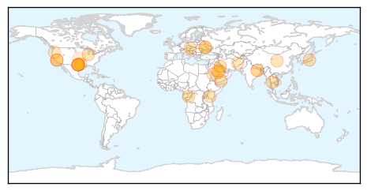
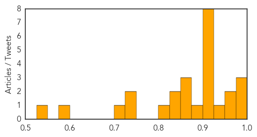

Pertussis
30-Day Web Trend
0 alerts, 0 warnings
30-Day Twitter Trend
0 alerts, 0 warnings

Article Locations

Article Confidences

Top Articles:
-
No articles found for Jun 07, 2014
Top Tweets:
-
No tweets found for Jun 07, 2014
Unknown
30-Day Web Trend
2 alerts, 0 warnings
30-Day Twitter Trend
0 alerts, 0 warnings

Article Locations
Article Confidences
Top Articles:
- 0.999
- Scientists question Saudi openness on deadly MERS virus outbreak
- 0.983
- 2 Utahns tracked after coming in contact with deadly MERS virus
- 0.975
- Mad cow disease claims life of Texas man. No need to panic, says CDC
- 0.965
- 4 Things to Know About Mad Cow Disease
- 0.960
- KUNA : No new MERS cases in Kuwait
- 0.935
- Mad Cow Diseases in Texas Kills Again
- 0.917
- CDC: Texas patient died of mad cow-related disease
- 0.917
- Chicago Tribune
- 0.917
- Chicago Tribune
- 0.917
- Chicago Tribune
- 0.917
- Chicago Tribune
- 0.914
- Texas patient dies of madcow disease
- 0.910
- The world windows to Thailand
- 0.910
- The world windows to Thailand
- 0.896
- Texas patient dies of mad cow disease
- 0.866
- 37 killed in massacre in eastern Congo-witness
- 0.866
- Putin orders tightening of border control with Ukraine
- 0.866
- Poroshenko calls on separatists to lay down their arms
- 0.841
- No let-up in acute encephalitis syndrome, four more kids die
- 0.832
- Mystery virus claims lives of 7 children
- 0.823
- The most from the coast
- 0.746
- Pilgrims Remain Undeterred from MERS Risk in Saudi Arabia
- 0.738
- Inactivated poliovirus booster recommended
- 0.707
- Chikungunya fever case confirmed in Central Fla.
- 0.589
- Team from Delhi to visit Muzaffarpur today
- 0.536
- Deadly Diseases Overlooked For Too Long, Scientists Say
Top Tweets:
- 0.569
- Servicio forense de São Paulo, en la mira por extracción de órganos: Fiscales de la ciudad brasileña de São Pa... http://t.co/7IkkSpq5qN